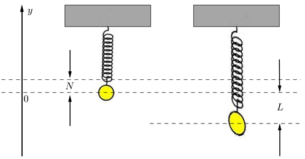
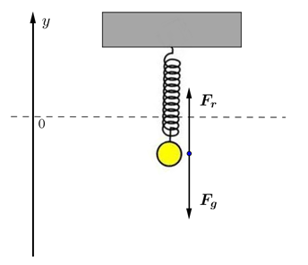
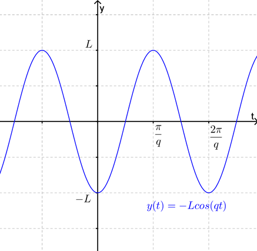
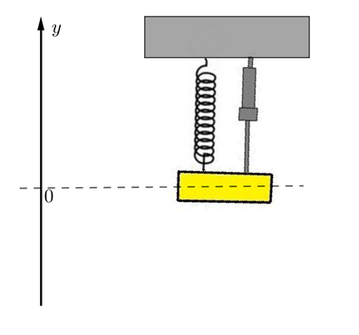
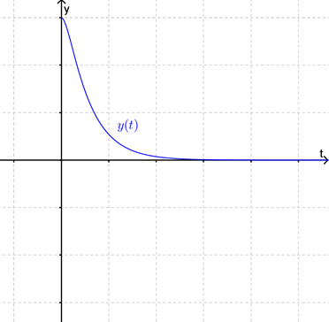
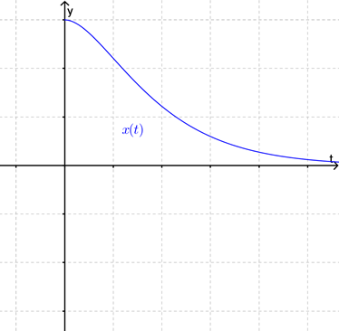
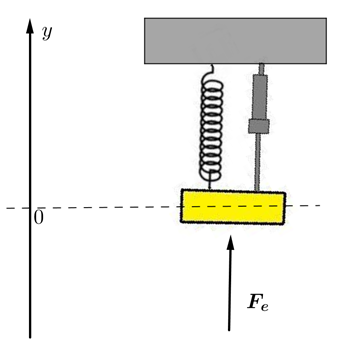
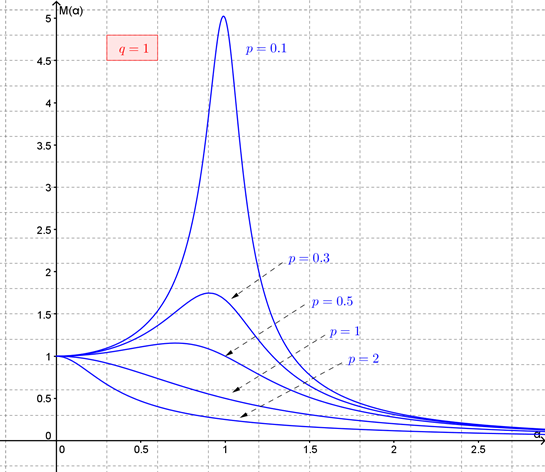
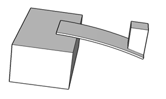

In previous lectures (i.e. Chapter 12 and Chapter 13) we discussed how to find solutions to DEs of this form (for various possibilities of \(f(x)\) at least). In this lecture we are going to discuss an application of this type of DE to modelling the vibrations of springs.
Section14.1A Simple Model
In this section we are going to model the motion of an object attached to the free end of a spring which has its other end fixed as shown in Figure 14.1. To construct this model set up an axis with its origin at the centre of the object when the object-spring system is in equilibrium and with the positive direction going upward. With respect to this axis assume that without the object attached the end of the spring is at \(y=N\text{.}\) Now, imagine that the object is pulled down \(L\) units (with respect to the axis) and then let go.

Figure14.1. Our models for the motion of the object will be based Hooke’s Law and Newton’s second law of motion.
Definition14.2.Hooke’s Law.
If a spring is stretched (compressed) \(U\) units beyond its natural position then it pulls (pushes) with a force, \(\mathbf{F_r}\text{,}\) of magnitude
where the value of \(k\) depends on the properties of the spring itself.
Common terminology is to call the force \(\mathbf{F_r}\) the restoring force and the constant \(k\) the spring constant.
Definition14.3.Newton’s Second Law of Motion.
The acceleration, \(\mathbf{a}\text{,}\) of an object as produced by a net force, \(\mathbf{F}\text{,}\) is directly proportional to the magnitude of the net force, in the same direction as the net force, and inversely proportional to the mass, \(m\text{,}\) of the object, i.e. \(\mathbf{F}=m\mathbf{a}\text{.}\)
So, now consider the forces acting on the object at any time \(t\) after the object has been pulled down and released. In our initial model we will assume that there are just two forces acting on the object as shown in Figure 14.4: firstly the force due to gravity, \(\mathbf{F_g}\text{,}\) and secondly the restoring force, \(\mathbf{F_r}\text{,}\) due to the spring.

Figure14.4. With the axis as set up in Figure 14.4 (or Figure 14.1), \(\mathbf{F_g}\) will always act in the negative direction. However, \(\mathbf{F_r}\) will be positive when the displacement of the object is less than \(N\) and negative when the displacement of the object is greater than \(N\) (i.e. the restoring force always acts in the direction of the natural position of the spring). Notice that since the motion of the object is one dimensional we can represent the relevant vector quantities by real numbers. The sign of the number will give us the direction of the vector.
Thus, the force due to gravity is constant and is given by
\begin{equation*}
F_g=-mg
\end{equation*}
where \(m\) is the mass of the object and \(g\) is the acceleration due to gravity. (This follows from Newton’s Universal Law of Gravitation and Newton’s second law of motion.). If \(y\) represents the displacement of (the centre of) the object then from Hooke’s Law
\begin{equation*}
F_r=-k(y-N)
\end{equation*}
where \(k\gt 0\) is the spring constant. Notice that the negative sign is needed in this relationship to make the restoring force act in the correct direction. Thus the net force acting on the object is
where \(q=\sqrt{\frac{k}{m}}\) is called the natural frequency of the system. (Note that \(q\) should probably be called the "natural angular frequency" since the frequency of \(y\) is \(\frac{q}{2\pi}\text{.}\)) The derivative of \(y\) is
and hence from the initial conditions we find that \(C_1=-L\) and \(C_2=0\text{.}\) Thus the solution to the initial-value problem is
\begin{equation*}
y(t)=-L\cos(qt)
\end{equation*}
As shown in Figure 14.5, this solution is telling us that (under the assumptions of the model) the motion of the object will be periodic about the equilibrium position i.e. will be simple harmonic motion.

Figure14.5. Of course real springs do not oscillate forever and so we conclude that our model must have ignored some important details (e.g. air resistance, frictional forces etc.) Despite this obvious shortcoming we will use this simple model as the basis for looking at more complicated contexts.
Section14.2Adding Damping
Imagine now that some sort of damping mechanism is added to the object-spring system as shown in Figure 14.6. (Such a system might be used as a simple model of a car shock absorber for example.)

Figure14.6. So long as the speed of the object is not too fast then a reasonable assumption is that the damping force acting on the object, \(\mathbf{F_d}\text{,}\) is proportional to the speed and acts in the direction opposing the motion of the object. Thus
Thus the nature of the general solution to (14.2) depends upon the sign of \(p^2-q^2\text{,}\) or equivalently, on the magnitude of the parameter \(\delta=\frac{p}{q}\text{.}\)\(\delta\) is called the damping parameter of the system.
If \(p^2-q^2\gt 0\) (or equivalently \(\delta=\frac{p}{q}\lt 1\)) then the general solution is
where both \(r_1\) and \(r_2\) are negative and hence the function will be like that shown in Figure 14.8. In this case the system is called over-damped.

Figure14.8. Finally if \(p^2-q^2=0\) (or equivalently \(\delta=\frac{p}{q}=1\)) then the general solution is
and hence the function will be like that shown in Figure 14.9. In this case the system is called critically-damped.

Figure14.9. The critically-damped case is of practical interest. Often we want to add damping to a system so that it returns close to its equilibrium position "as quickly as possible", (for example in the shock absorber of a car). It turns out that this is achieved by critical damping.
Section14.3Adding an External Force
In our final model we will look at the situation where some other external force, \(\mathbf{F_e}\text{,}\) is also acting on the object along the \(y\)-axis, as shown in Figure 14.10. This context has many applications, especially in engineering, although in most applications the context doesn’t actually look like the diagram shown in Figure 14.10. For example if the top of a power pole is pulled to one side and let go it will behave like an object-spring system with damping. Now when a wind blows past the pole it is possible that aerodynamic effects can result in an oscillating side force acting on the pole.

Figure14.10. Assume that the external force is oscillatory and hence can be represented by
So now the DE is a non-homogeneous 2nd order linear DE with constant coefficients. The general solution is constructed from the complementary solution and a particular solution. We know the complementary solution from our previous model. From that model we know that the complementary solution always tends to \(0\) as \(t\rightarrow\infty\text{.}\) Thus the long term behaviour of this system is determined by the particular solution to (14.3). From Chapter 13 we know that a particular solution will be of the form
Using some standard trigonometric identities it can be shown that
\begin{equation*}
C=\sqrt{a^2+b^2} \textrm{ and } \beta=\tan^{-1}\left(\frac{b}{a}\right)
\end{equation*}
Thus
\begin{equation*}
C=\frac{A}{\sqrt{4p^2\alpha^2+(\alpha^2-q^2)^2}} \textrm{ and } \beta=\tan^{-1}\left(\frac{2p\alpha}{\alpha^2-q^2}\right)
\end{equation*}
From this we can conclude that the long term response of our damped object-spring system to forcing by an external force \(F_e(t)=A\cos(\alpha t)\) is to oscillate at the forcing angular frequency, \(\alpha\text{,}\) and with an amplitude
Notice that, since for a given object-spring system \(p\) and \(q\) are fixed values, this factor \(M\) is a function of the forcing angular frequency \(\alpha\text{.}\)Figure 14.11 shows graphs of \(M(\alpha)\) for various values of \(p\) (which relates to the damping coefficient) when \(q\) (which relates to the stiffness coefficient) is held constant at \(q=1\text{.}\) In fact, it can be shown that if the damping parameter \(\delta\) (\(=\frac{p}{q}\)) is small then \(M\) has a maximum when the forcing frequency is near the natural frequency of the system and further that this maximum tends to infinity as \(\delta\rightarrow 0\text{.}\)

Figure14.11.
The significance of this analysis is the insight that if our damped object-spring system is subjected to an external oscillatory force near the natural frequency of the system it will respond with large amplitude motion unless the system is sufficiently damped. This phenomenon is known as resonance.
ExercisesExample Tasks
1.
Determine the values of \(a\) and \(b\) in the DE \(\frac{d^2x}{dt^2}+2a\frac{dx}{dt}+bx=0\) that give the damped object-spring system a damping parameter of \(0.5\) and a natural frequency of \(2\text{.}\)
2.
A beam that is fixed rigidly at one end and designed to support a load at the other end is called a cantilever. If the cantilever is designed only to deflect a "small" amount under its load then it is reasonable to assume that the size of the deflection of the tip of the cantilever is proportional to the load applied. When such a cantilever is deflected beyond (or less than) its equilibrium position the cantilever exerts a restoring force toward the equilibrium position. So long as the deflection is reasonably small and the mass of the object is large compared to the mass of the cantilever this restoring force is proportional to the deflection. Show that the resulting motion of the tip of the cantilever can be modelled under these assumptions via a homogeneous 2nd order linear DE.

Figure14.12.
3.
Show that if \(a\cos(\alpha t)+b\sin(\alpha t)=C\cos(\alpha t-\beta)\) then
\begin{equation*}
C=\sqrt{a^2+b^2} \textrm{ and } \beta=\tan^{-1}\left(\frac{b}{a}\right)
\end{equation*}